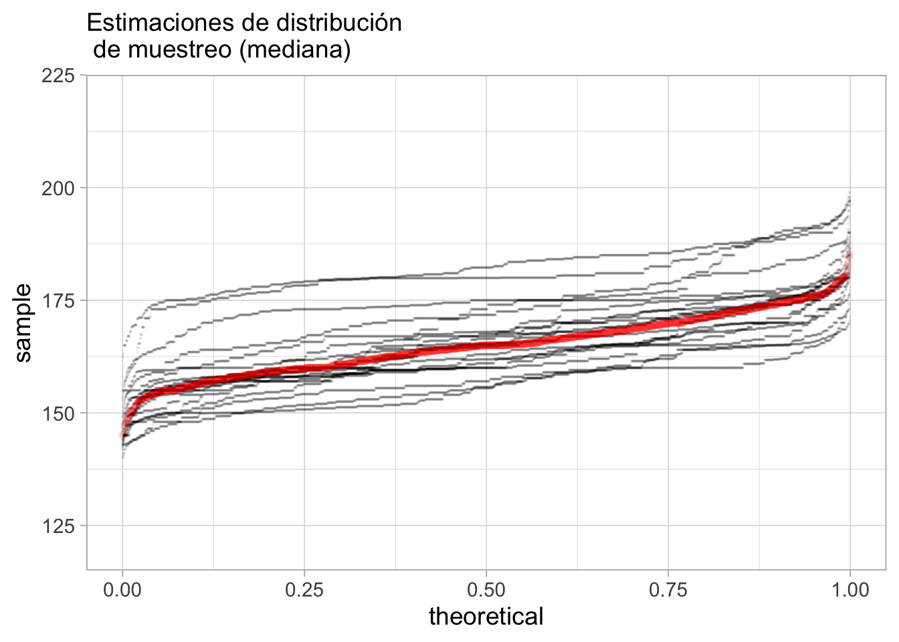

6 Remuestreo
Ejemplo: estimación e intervalos de confianza
Regresamos a nuestro ejemplo anterior donde muestreamos 3 grupos, y nos preguntábamos acerca de la diferencia de sus medianas. En lugar de hacer pruebas de permutaciones (con gráficas o numéricas), podríamos considerar qué tan precisa es cada una de nuestras estimacione para las medianas de los grupos, por ejemplo.
Nuestros resultados podríamos presentarlos como sigue:
Donde en rojo está nuestro estimador puntual de la mediana de cada grupo (la mediana muestral), y las rectas mustran un intervalo de 95% para nuestra estimación de la mediana: esto quiere decir que los valores poblacionales tienen probabilidad aproximada de 95% de estar dentro del intervalo.
Este análisis comunica correctamente que tenemos incertidumbre alta acerca de nuestras estimaciones (especialmente grupos b y c), y que no tenemos mucha evidencia de que el grupo b tenga una mediana poblacional considerablemente más alta que a o c.
Interpretación de intervalos de confianza
Generalmente, “intervalo de confianza” (de 90% de confianza, por ejemplo) significa, desde el punto de vista frecuentista:
- Cada muestra produce un intervalo distinto. Para el 90% de las muestras posibles, el intervalo cubre al valor poblacional.
- Así que con alta probabilidad, el valor poblacional está dentro del intervalo.
- Intervalos más anchos nos dan más incertidumbre acerca de dónde está el verdadero valor poblacional (y al revés para intervalos más angostos)
Existen también “intervalos creíbles” (de 90% de probabilidad, por ejemplo), que se interpetan de forma bayesiana:
- Con alta probabilidad, creemos que el valor poblacional está dentro del intervalo creíble.
La técnica que veremos a continuación (bootstrap) se puede interpretar de las dos maneras.
- La interpretación bayesiana puede ser más natural
- La interpretación frecuentista nos da maneras empíricas de probar si los intervalos de confianza están bien calibrados o no: es un mínimo que “intervalos del 90%” debería satisfacer.
Así que tomamos el punto de vista bayesiano en la intepretación, pero buscamos que nuestros intervalos cumplan o aproximen bien garantías frecuentistas (discutimos esto más adelante).
Cómo producir intervalos para estimación
Existen muchas técnicas para construir estos intervalos que muestran la incertidumbre en nuestras estimaciones: métodos basados en distribuciones estándar, métodos paramétricos y no paramétricos, distintos métodos bayesianos (entonces se llaman intervalos creíbles o de probabilidad), etc.
En este curso, como ejemplo, y también por ser una técnica versátil, presentaremos el bootstrap no paramétrico (ver Efron y Tibshirani (1993)), donde utilizaremos simulación (y poder de cómputo) para producir este tipo de intervalos, bajo ciertas condiciones de extracción de la muestra que discutiremos más adelante.
Distribución de Muestreo
Supongamos que consideramos la población de casas de nuestro ejemplo anterior
casas_pob <- casas |> select(id, precio_miles, nombre_zona)
casas_pob |> sample_n(20) |> formatear_tabla()| id | precio_miles | nombre_zona |
|---|---|---|
| 721 | 275.0 | StoneBr |
| 237 | 185.5 | CollgCr |
| 270 | 148.0 | Edwards |
| 269 | 120.5 | IDOTRR |
| 362 | 145.0 | BrkSide |
| 1152 | 149.9 | Edwards |
| 973 | 99.5 | SawyerW |
| 1037 | 315.5 | Timber |
| 1092 | 160.0 | Somerst |
| 1286 | 132.5 | BrkSide |
| 1208 | 200.0 | CollgCr |
| 540 | 272.0 | CollgCr |
| 367 | 159.0 | NAmes |
| 283 | 207.5 | NridgHt |
| 52 | 114.5 | BrkSide |
| 761 | 127.5 | NAmes |
| 1297 | 155.0 | NAmes |
| 822 | 93.0 | OldTown |
| 956 | 145.0 | Crawfor |
| 790 | 187.5 | ClearCr |
Y nos interesa saber, para la población, cuál es la mediana de los precios de casas. Suponemos que no tenemos acceso a los datos poblacionales, y decidimos diseñar una encuesta para tomar una muestra de 50 casas que fueron vendidas en cierto periodo. Suponemos una muestra aleatoria simple con reemplazo (la población es grande y no hay mucha diferencia entre hacerlo con o sin reemplazo) de tamaño fijo, por ejemplo \(n = 50\)
Buscamos estimar la mediana poblacional con la mediana de nuestra muestra:
fun_muestra <- function(x){
median(x)
}Como es de esperarse, distintas muestras dan distintas estimaciones de la mediana
casas_pob |> sample_n(50, replace = T) |> summarise(mediana = fun_muestra(precio_miles))# A tibble: 1 × 1
mediana
<dbl>
1 156casas_pob |> sample_n(50, replace = T) |> summarise(mediana = fun_muestra(precio_miles))# A tibble: 1 × 1
mediana
<dbl>
1 145En estimación, uno de los conceptos básicos el de la distribución de muestreo. La distribución de muestreo son los valores que puede tomar nuestro estimador bajo todas las posibles muestras que pudiéramos obtener.
¿Por qué es importante este concepto? La distribución de muestreo del estimador nos indica qué tan lejos o cerca vamos a caer del verdadero valor poblacional que queremos estimar. No sabemos qué muestra vamos a obtener, pero con la distribución de muestreo podemos saber qué tan mal o bien nos puede ir y con qué probabilidades.
Aproximando la distribución de muestreo
En nuestro ejemplo tenemos la población (esto normalmente no es cierto) y podemos extraer un número muy grande de muestras de tamaño 50. Calculamos el estimador para cada una de esas muestras. El código es simple:
# Repetir 5000 veces
mediana_muestras <- map_dbl(1:5000, ~ casas_pob |>
sample_n(50, replace = T) |> # muestra de 50
summarise(mediana_precio = fun_muestra(precio_miles)) |> pull(mediana_precio)) # calcular mediana de la muestraAhora examinamos la distribución de los valores que obtuvimos:
sims_dm <- tibble(muestra = 1:length(mediana_muestras), mediana_precio = mediana_muestras)
valor_poblacional <- median(casas$precio_miles)
ggplot(sims_dm, aes(sample = mediana_muestras)) + geom_qq(distribution = stats::qunif) +
ylab("Mediana muestral") + xlab("f") + labs(subtitle = "Distribución de muestreo para mediana (n = 50)") +
geom_hline(yintercept = valor_poblacional, colour = "red") +
annotate("text", x = 0.2, y = valor_poblacional+5, label = "Mediana poblacional", colour = "red")
- Con esta gráfica podemos juzgar qué tan lejos puede caer nuestra estimación muestral del valor poblacional. Cuanto más concentrada esté alrededor del valor poblacional, la probabilidad es más alta de que obtengamos una estimación precisa cuando tomemos una muestra particular. Podemos hacer un histograma también:

Los cuantiles que cubren a un 95% de las muestras son:
quantile(mediana_muestras - valor_poblacional , c(0.025, 0.975)) |> round(1) 2.5% 97.5%
-21.5 21.9 - Esto quiere decir que si estimamos con una muestra el valor poblacional, esperamos con 95% de probabilidad que el error sea menos de unas 20 unidades. *Esta es la precisión de nuestro estimador.
Si usamos una muestra más grande (n = 200, por ejemplo) podemos obtener un resultado más preciso:
Y como es de esperarse, vemos que muestras más grandes resultan en menos variablidad, y menor error de estimación.
- Mejores distribuciones de muestreo: más concentradas alrededor del verdadero valor poblacional
Distribución de muestreo y distribución poblacional
Una confusión inicial que es común es entre la distribución de muestreo y la distribución poblacional. La poblacional muestra cómo se distribuyen los valores de la variable de interés:
ggplot(casas_pob, aes(x = precio_miles)) + geom_histogram() +
geom_vline(xintercept = valor_poblacional)Que es muy diferente que las distribuciones de muestreo de nuestros dos estimadores:
g_dist_muestreoEl mundo bootstrap
El problema que tenemos ahora es que normalmente sólo tenemos una muestra, así que no es posible calcular las distribuciones de muestreo como hicimos arriba. Sin embargo, podemos hacer lo siguiente:
- Si tuviéramos la distribución poblacional, simulamos muestras para aproximar la distribución de muestreo de nuestro estimador, y así entender su variabilidad.
- Pero no tenemos la distribución poblacional
- Sin embargo, podemos estimar la distribución poblacional con nuestros valores muestrales
Mundo bootstrap
- Si usamos la estimación del inciso anterior, entonces usando 1 podríamos tomar muestras de nuestros datos muestrales, como si fueran de la población, y usando el mismo tamaño de muestra. El muestreo lo hacemos con reemplazo, como la muestra original.
- A la distribución resultante le llamamos distribución bootstrap de la muestra
- Usamos la distribución bootstrap de la muestra para estimar la variabilidad en nuestra estimación con la muestra original.
Veamos que sucede para un ejemplo concreto. Primero extraemos nuestra muestra:
set.seed(2112)
muestra <- sample_n(casas_pob, 150, replace = T)Esta muestra nos da nuestro estimador de la distribución poblacional:
bind_rows(muestra |> mutate(tipo = "muestra"),
casas_pob |> mutate(tipo = "población")) |>
ggplot(aes(sample = precio_miles, colour = tipo, group = tipo)) +
geom_qq(distribution = stats::qunif, alpha = 0.7, size = 2) +
scale_color_colorblind()Y vemos que la aproximación es razonable, especialmente en las partes centrales de la distribución. Usamos nuestra muestra para estimar la población.
Para evaluar ahora la variabilidad de nuestro estimador, podemos extraer un número grande de muestras con reemplazo de tamaño 150 de la muestra - estamos en el mundo Bootstrap!
mediana_muestras <- map_dbl(1:5000, ~ muestra |>
sample_n(150, replace = T) |>
summarise(mediana_precio = fun_muestra(precio_miles)) |> pull(mediana_precio)) Y nuestra estimación de la distribución de muestreo es entonces:
bootstrap <- tibble(mediana = mediana_muestras)
ggplot(bootstrap, aes(sample = mediana)) + geom_qq(distribution = stats::qunif)Y podemos calcular ahora un intervalo de confianza del 90% simplemente calculando los cuantiles de esta distribución (no son los cuantiles de la muestra original!):
limites_ic <- quantile(mediana_muestras, c(0.05, 0.95)) |> round()
limites_ic 5% 95%
154 173 Presentaríamos nuestro resultado como sigue: nuestra estimación puntual de la mediana es 165, con un intervalo de confianza del 90% de (154, 173)
Experimento de simulación
En nuestro ejemplo, podemos ver varias muestras (por ejemplo 20) de tamaño 100, y vemos cómo se ve la aproximación a la distribución de la población:

Podemos calcular las distribuciones de remuestreo para cada muestra bootstrap, y compararlas con la distribución de muestreo real.

Cada una de estas distribuciones de remuestreo nos da un intervalo para estimar la mediana poblacional:
mediana_pob <- median(casas$precio_miles)
dist_boot |> group_by(rep) |>
summarise(q05 = quantile(precio_miles, 0.05), q95 = quantile(precio_miles, 0.95)) |>
ggplot(aes(x = rep, ymin = q05, ymax = q95)) +
geom_hline(yintercept = mediana_pob, colour = "red") +
geom_linerange() Notese que aquí estamos intentando construir intervalos de 90% de cobertura, y logramos nuestro propósito aproximadamente.
Cobertura nominal y cobertura real
¿Cómo sabemos que la cobertura nominal del 90% es cercana a la realidad? Sería muy malo que los intervalos fueran demasiado anchos (exageramos la variabilidad) o demasiado angostos (damos la idea de que nuestra estimación es más precisa de lo que realmente es). Que esto se cumpla depende de:
- Cuál es la estadística de interés
- Cómo es la población
- El tamaño de muestra y otros aspectos del muestreo
Varias observaciones útiles se pueden consultar en Hesterberg (2015) y en Efron y Tibshirani (1993) (por ejemplo, el bootstrap no funciona bien para estadísticas como el mínimo o el máximo). En estas referencias también pueden consultarse recomendaciones de cómo mejorar intervalos basados en boostrap - los que vimos se llaman intervalos de percentiles, pero hay más opciones simples que se desempeñan mejor en ciertos casos.
Y siempre podemos hacer ejercicios de simulación bajo ciertos supuestos acerca de la población para una estadística dada, y estimar empíricamente si la cobertura es adecuada.
Ejemplo
Construimos para nuestra población varias muestras bootstrap con sus respectivos intervalos de cuantiles. ¿Qué porcentaje de veces cubrimos al verdadero valor?
#rep_remuestreo <- map(1:200, ~ muestras_boot(.x, B = 2000, fun_muestra = fun_muestra)) |> bind_rows
rep_remuestreo <- read_csv("./datos/bootstrap_reps.csv")Con nuestras muestras, checamos ahora nuestros intervalos y su cobertura
intervalos <- rep_remuestreo |>
group_by(n, rep) |>
summarise(inf = quantile(mediana, 0.05), sup = quantile(mediana, 0.95)) |>
mutate(valor_poblacional = median(casas_pob$precio_miles))`summarise()` has grouped output by 'n'. You can override using the `.groups`
argument.ggplot(intervalos, aes(x = rep, ymin = inf, ymax = sup)) +
geom_hline(yintercept = median(casas_pob$precio_miles), colour = "salmon") +
geom_linerange(alpha = 0.7) +
facet_wrap(~n) La cobertura para nuestros intervalos es:
intervalos |> mutate(cubre = valor_poblacional > inf & valor_poblacional < sup) |>
group_by(n) |> summarise(cobertura = mean(cubre),
ee_cobertura = (sd(cubre) /sqrt(n())) |> round(3)) # A tibble: 2 × 3
n cobertura ee_cobertura
<dbl> <dbl> <dbl>
1 50 0.895 0.022
2 150 0.915 0.02 Para este número de repeticiones, estos números son consistentes con la cobertura nominal de 90%.
Ejemplo: estereogramas
En este caso, queremos hacer inferencia sobre la diferencia de tiempo de reconocimiento de los grupos. Como discutimos antes, preferimos hacer comparaciones multiplicativas. En este caso particular, compararemos el cociente de las medias:
Podemos adaptar el bootstrap en este caso para dos grupos: hacemos remuestreo de cada grupo, comparamos diferencias, y repetimos
fusion <- read_table("./datos/fusion_time.txt")
muestra_boot <- function(datos, grupo, medicion, fun_muestra, comparacion){
est_boot <- datos |> group_by({{ grupo }}) |>
sample_n(n(), replace = T) |>
summarise(est = fun_muestra( {{ medicion }})) |>
spread(nv.vv, est) |>
mutate(comp = {{ comparacion }}) |>
pull(comp)
est_boot
}
muestra_boot(fusion, nv.vv, time, median, VV / NV) |> round(2)[1] 0.59La distribución de remuestreo es:
reps_boot <- map_dbl(1:2000, ~ muestra_boot(fusion, nv.vv, time, mean, VV / NV))
ggplot(tibble(cociente_boot = reps_boot), aes(sample = reps_boot)) +
geom_qq(distribution = stats::qunif) + xlab("f") + ylab("Cociente")y un intervalo de 90% sería:
quantile(reps_boot, c(0.05, 0.95)) |> round(2) 5% 95%
0.46 0.91 Y esta sería una forma de presentar nuestros resultados: hay probabilidad considerable de que el efecto de este tratamiento sea marginal (una reducción de 10%), aunque lo más probables es que tenga un efecto consdierable (reducción alrededor de 60% del tiempo de fusión).
6.1 Bootstrap con muestras complejas
Cuando el esquema de muestreo es estratificado o complejo (polietápico), es posible adaptar el bootstrap para producir intervalos apropiados. La idea es:
El esquema de remuestreo debe replicar el esquema con el que se seleccionó la muestra original.
Muestreo estratificado: hacemos muestras bootstrap de cada estrato por separado.
Muestreo complejo: dentro de estratos, seleccionamos muestras bootstrap de unidades primarias de muestreo. En este caso, a veces es necesario también reajustar los ponderadores para replicar su construcción original (ver bootstrap de Rao-Wu).
Ejemplo: conteo rápido 2018
estratificacion_tbl <- read_delim("datos/conteo_rapido/presidencia.csv",
skip = 5, delim = "|") |>
select(CLAVE_CASILLA, ID_ESTADO, ID_DISTRITO) |>
filter(ID_DISTRITO != 0) |>
mutate(estrato = interaction(ID_ESTADO, ID_DISTRITO)) |>
count(estrato)head(estratificacion_tbl) |> kable() |> kable_paper()| estrato | n |
|---|---|
| 1.1 | 488 |
| 2.1 | 563 |
| 3.1 | 551 |
| 4.1 | 591 |
| 5.1 | 550 |
| 6.1 | 504 |
remesa_tbl <- read_delim("datos/conteo_rapido/REMESAS0100020000.txt",
skip = 1, delim = "|") |>
mutate(estrato = interaction(iD_ESTADO, ID_DISTRITO_FEDERAL)) |>
select(estrato, TOTAL, JAMK, RAC, AMLO) |>
left_join(estratificacion_tbl)Ignoraremos casillas faltantes: lo cual sabemos que en general no es una buena idea. Primero usamos una aproximación de Taylor para estimar error estándar y los intervalos:
library(survey)
diseño_cr <- svydesign(id = ~1, strata = ~estrato, fpc = ~ n, data = remesa_tbl)
svyratio(~ RAC + JAMK + AMLO, ~ TOTAL, diseño_cr) |>
confint() |>
round(4) |>
as_tibble(rownames = "candidato")# A tibble: 3 × 3
candidato `2.5 %` `97.5 %`
<chr> <dbl> <dbl>
1 RAC/TOTAL 0.220 0.225
2 JAMK/TOTAL 0.158 0.162
3 AMLO/TOTAL 0.532 0.538Ahora utilizaremos bootstrap. Se puede hacer directamente con el paquete survey, por ejemplo:
diseño_cr_boot <- as.svrepdesign(diseño_cr, type = "subbootstrap", replicates = 1000)
svyratio(~ RAC + JAMK + AMLO, ~ TOTAL, diseño_cr_boot) |>
confint() |>
round(4) |>
as_tibble(rownames = "candidato")# A tibble: 3 × 3
candidato `2.5 %` `97.5 %`
<chr> <dbl> <dbl>
1 RAC/TOTAL 0.220 0.226
2 JAMK/TOTAL 0.158 0.162
3 AMLO/TOTAL 0.532 0.538En este caso simple de muestreo estratificado, también podemos escribir nuestro propio código. Tenemos dos funciones:
# extrae muestra bootstrap estratificada
extraer_bootstrap <- function(muestra, var_estrato){
remuestra <- muestra |>
group_by({{ var_estrato }}) |>
slice_sample( prop = 1, replace = TRUE) |>
ungroup()
remuestra
}
# cálculo del estimador de razón para una muestra
estimar_razon <- function(muestra, num, denom, var_estrato){
estimador <- muestra |>
group_by({{ var_estrato }}) |>
summarise(candidato = mean({{ num }}), total = mean({{ denom }}), n = first(n)) |>
mutate(candidato = n * candidato, total = n * total) |>
ungroup() |>
summarise(prop = sum(candidato) / sum(total))
estimador
}Y ahora aplicamos repetidamente el estimador a las muestras bootstrap estratificadas:
remuestreo_tbl <- map_df(1:500, function(rep){
remuestra <- extraer_bootstrap(remesa_tbl, estrato)
estimador <- estimar_razon(remuestra, RAC, TOTAL, estrato)
tibble(rep = rep, est_rep = estimador$prop)
})
ggplot(remuestreo_tbl, aes(sample = est_rep)) + geom_qq()quantile(remuestreo_tbl |> pull(est_rep), c(0.025, 0.975)) |>
round(4) 2.5% 97.5%
0.2204 0.2254 Ventajas y desventajas del bootstrap
- El bootstrap es una técnica versátil generalmente fácil de implementar (ventaja) - especialmente cuando a algún nivel podemos suponer que las muestras son idependientes e idénticamente distribuidas (desventaja).
Por ejemplo: en muestreo estratificado, podemos hacer bootstrap sobre cada estrato por separado. En muestreo complejo, podemos hacer bootstrap de unidades primarias de muestreo, etc.
Requiere más cómputo que fórmulas estándar (desventaja), pero tenemos flexibilidad (ventaja) para aplicar en estadísticas diferentes de manera muchas veces trivial (ventaja).
Es una técnica estándar en el análisis de datos que se usa en un rango grande de aplicaciones (ventaja).
En el caso de muestras chicas y ciertas distribuciones poblacionales, los intervalos bootstrap de percentiles que vimos aquí pueden ser un poco angostos y no cumplir la cobertura nominal por ejemplo, si la muestra es de tamaño < 40. la cobertura puede ser de 90% en lugar de 95% en algunos casos (población normal, o de 80% en lugar de 95% en una poblacion exponencial), ver Hesterberg (2015)). Hay mejores opciones en estos casos (por ejempo, intervalos bootstrap-t, que se calculan fácilmente también).
Finalmente, en casos donde tenemos la población total, o el supuesto de muestras aleatorias es dudoso, lo podemos utilizar más informalmente como un análisis de sensibilidad de nuestros resultados. Es una perturbación a los datos (que podemos combinar con otros tipos de perturbaciones) para juzgar qué tan fuertemente depende nuestro análisis de los datos que tenemos a mano.
Sesgo
Algunos estimadores comunes (por ejemplo, cociente de dos cantidades aleatorias) pueden sufrir de **sesgo* grande, especialmente en el caso de muestras chicas. Esto afecta la cobertura, pues es posible que nuestros intervalos no tengan “cobertura simétrica”, por ejemplo. Para muchos estimadores, y muestras no muy chicas, esté sesgo tiende a ser poco importante y no es necesario hacer correcciones.
Podemos evaluar el sesgo comparando la media de nuestras replicaciones bootstrap con el valor muestral que obtuvimos (para estadísticas funcionales, ver Hesterberg (2015)). Si el tamaño del sesgo es chico comparado con la dispersión de la distribución bootstrap (por ejemplo, menos de 20% de la desviación estándar, Efron y Tibshirani (1993)), no es muy importante hacer correcciones.
En caso de que esta cantidad sea relativamente grande en relación a la dispersión de la distribución bootstrap, hay variantes los intervalos bootstrap de percentiles que mejoran esta situación (Efron y Tibshirani (1993)).
Bootstrap y estimadores complejos: suavizadores
El bootstrap es una técnica versátil. Por ejemplo, podemos usarlo para juzgar la variabilidad de un suavizador:
graf_casas <- function(data){
ggplot(data |> filter(calidad_gral < 7),
aes(x = area_habitable_sup_m2)) +
geom_point(aes(y = precio_m2_miles), alpha = 0.75) +
geom_smooth(aes(y = precio_m2_miles), method = "loess", span = 0.7,
se = FALSE, method.args = list(degree = 1, family = "symmetric"))
}
set.seed(250)
casas_muestra <- sample_frac(casas, 0.2)
graf_casas(casas_muestra)Podemos hacer bootstrap para juzgar la estabilidad del suavizador:
suaviza_boot <- function(x, data){
# remuestreo
muestra_boot <- sample_n(data, nrow(data), replace = T)
ajuste <- loess(precio_m2_miles ~ area_habitable_sup_m2, data = muestra_boot,
degree = 1, span = 0.7, family = "symmetric")
datos_grafica <- tibble(area_habitable_sup_m2 = seq(25, 250, 5))
ajustados <- predict(ajuste, newdata = datos_grafica)
datos_grafica |> mutate(ajustados = ajustados) |>
mutate(rep = x)
}
reps <- map(1:10, ~ suaviza_boot(.x, casas_muestra |> filter(calidad_gral < 7))) |>
bind_rows()# ojo: la rutina loess no tienen soporte para extrapolación
graf_casas(casas_muestra) +
geom_line(data = reps, aes(y = ajustados, group = rep), alpha = 1, colour = "red") Donde vemos que algunas cambios de pendiente del suavizador original no son muy interpretables (por ejemplo, para áreas chicas) y alta variabilidad en general en los extremos. Podemos hacer más iteraciones para calcular bandas de confianza:
reps <- map(1:200, ~ suaviza_boot(.x, casas_muestra |> filter(calidad_gral < 7))) |>
bind_rows()
# ojo: la rutina loess no tienen soporte para extrapolación
graf_casas(casas_muestra) +
geom_line(data = reps, aes(y = ajustados, group = rep), alpha = 0.2, colour = "red") Bootstrap y estimadores complejos: tablas de perfiles
Podemos regresar al ejemplo de la primera sesión donde calculamos perfiles de los tomadores de distintos tés: en bolsa, suelto, o combinados:
| price | tea bag | tea bag+unpackaged | unpackaged | promedio |
|---|---|---|---|---|
| p_upscale | -0.71 | -0.28 | 0.98 | 28 |
| p_variable | -0.12 | 0.44 | -0.31 | 36 |
| p_cheap | 0.3 | -0.53 | 0.23 | 2 |
| p_branded | 0.62 | -0.16 | -0.45 | 25 |
| p_private label | 0.72 | -0.22 | -0.49 | 5 |
| p_unknown | 1.58 | -0.58 | -1 | 3 |
Hacemos bootstrap sobre toda la muestra, y repetimos exactamente el mismo proceso de construción de perfiles:
boot_perfiles <- map(1:1000, function(x){
te_boot <- te |> sample_n(nrow(te), replace = TRUE)
calcular_perfiles(te_boot) |> mutate(rep = x)
}) |> bind_rows()Ahora resumimos y graficamos, esta vez de manera distinta:
resumen_perfiles <- boot_perfiles |> group_by(how, price) |>
summarise(perfil_media = mean(perfil), ymax = quantile(perfil, 0.9), ymin = quantile(perfil, 0.10)) `summarise()` has grouped output by 'how'. You can override using the `.groups`
argument.resumen_bolsa <- resumen_perfiles |> ungroup() |>
filter(how == "tea bag") |> select(price, perfil_bolsa = perfil_media)
resumen_perfiles <- resumen_perfiles |> left_join(resumen_bolsa) |>
ungroup() |>
mutate(price = fct_reorder(price, perfil_bolsa))Joining, by = "price"ggplot(resumen_perfiles, aes(x = price, y = perfil_media, ymax = ymax, ymin = ymin)) +
geom_point(colour = "red") + geom_linerange() +
facet_wrap(~how) + coord_flip() +
geom_hline(yintercept = 0, colour = "gray") + ylab("Perfil") + xlab("Precio")Nótese una deficiencia clara del bootstrap: para los que compran té suelto, en la muestra no existen personas que desconocen de dónde provienen su té (No sabe/No contestó). Esto produce un intervalo colapsado en 0 que no es razonable.
Podemos remediar esto de varias maneras: quitando del análisis los que no sabe o no contestaron, agrupando en otra categoría, usando un modelo, o regularizar usando proporciones calculadas con conteos modificados: por ejemplo, agregando un caso de cada combinación (agregaría 18 personas “falsas” a una muestra de 290 personas).